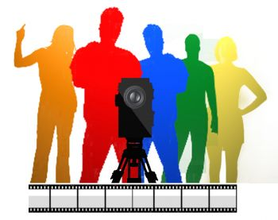
Короткометражный фильм (короткий метр, фр. court métrage) — фильм, длина которого не превышает 40-50 минут. Средняя длина короткометражки колеблется в промежутке от 10 до 30 минут. Противопоставляется полнометражному фильму (иногда выделяется также промежуточная категория среднеметражных фильмов).
Американская академия киноискусства определяет короткометражный фильм как такой, который длится не более 40 минут, включая полные титры. В СССР короткометражными кинофильмами считались те, размер которых не превышал 4—5 частей (1200—1500 метров плёнки).
Практически все кинорежиссёры начинают с короткого метра, так как затраты на производство короткометражного фильма значительно ниже, чем у полнометражного. Изначально весь игровой кинематограф был короткометражным.
Многие фильмы стали классикой. Когда журнал Sight & Sound в 2012 г. опросил 846 кинокритиков со всего мира на предмет выявления величайших фильмов, среди короткометражных наибольшее число голосов получили «Взлётная полоса» (29 голосов), «Шерлок-младший» (25), «Андалузский пёс» (17), «Полуденные сети», «Длина волны» (16) и «Путешествие на Луну» (10).
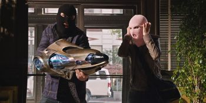
Item 47 is a 2012 American direct-to-video short film featuring the Marvel Comics organization S.H.I.E.L.D. (Strategic Homeland Intervention Enforcement and Logistics Division), produced by Marvel Studios and distributed by Walt Disney Studios Home Entertainment on the home media release of Marvel's The Avengers. It is a follow up and spin-off of The Avengers, and is the third film in the Marvel One-Shots short film series. The film is directed by Louis D'Esposito, with a screenplay by Eric Pearson, and is set in the Marvel Cinematic Universe (MCU), sharing continuity with the films of the franchise. It stars Lizzy Caplan, Jesse Bradford, Maximiliano Hernández, and Titus Welliver, with Hernández reprising his role from the film series. In Item 47, two civilians come across a Chitauri gun and use it to commit crimes.
The short helped lead to ABC ordering a television series spin-off, Agents of S.H.I.E.L.D., which began airing in September 2013.
Кунг Фьюри (англ. Kung Fury) — короткометражный комедийный боевик, снятый шведским режиссёром Давидом Сандбергом, который также написал сценарий к фильму и сыграл в нём главную роль. Фильм снят в стилистике популярных в 80-х годах боевиков о полицейских и боевых искусствах и является данью уважения им.
Денежные средства на создание фильма были собраны с помощью краудфандингового сервиса Kickstarter. При декларируемой цели создателя фильма в 200 тыс. $ проект собрал 630 019 $. Окончательная цель в 1 млн $, необходимая для создания полнометражного фильма, так и не была достигнута.
Интересные факты:
• Язык программирования, который показывается зрителю крупным планом, когда Хакермэн «хачит время» — Java. Это забавный анахронизм, поскольку в 1985 году его ещё не создали.
• В процессе «хака времени», в конце полосы загрузки на мониторе формула E=mc2 превратилась в E=mc3.
• Ближе к концу фильма, когда Кунг Фьюри собирается вновь вступить в бой с обезумевшим игровым автоматом, оказывается, что его машина содержит в себе разумный компьютер. Это отсылка к популярному сериалу Рыцарь дорог, а название компьютера HOFF9000 и его «лицо» на экране в салоне автомобиля — к актеру Дэвиду Хассельхоффу, сыгравшему одну из главных ролей в этом сериале и компьютеру HAL 9000 из «Космической одиссеи» Артура Кларка.
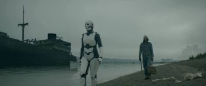
AKA:
Movie: Manual
Storyline: In a dystopian future, the last human is raised by a machine. He struggles with the loneliness of no human interaction and questions the teachings of a mysterious religious 'Manual' which the machine claims is holy.
Genres: Short, Sci-Fi
Actor: Lauren Emery, J.J. Johnston
Director: Wil Magness
Country: USA
Duration: 30 min
Release: 20 July 2018 (USA)
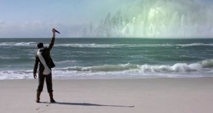
Miskatonic University is a short film inspired by the works of H.P. Lovecraft.
Story:
New England, 1929. Thomas Highland is a veteran of the Great War, a scholar of the occult, and the newest professor at Miskatonic University. Arriving at the prestigious institution, he quickly attempts to ingratiate himself with the mysterious Professor Eliot and his beautiful daughter, while concealing a great secret: Highland’s purpose at Miskatonic extends well beyond the advancement of his research. In fact, he harbors a powerful curse, acquired in foreign lands, and believes that certain forbidden texts located at Miskatonic may be his last chance at salvation. Unbenownst to Highland, his efforts will threaten to unlock even greater horrors than he previously imagined.
Directed by:
James Bentley
Writing Credits:
• James Bentley - co-writer
• David Donnelly
• H.P. Lovecraft - inspired by
• Perry O'Brien - co-writer
Starring:
• David Nelson as Thomas Highland
• Melissa Dougherty as Sarah Eliot
• Donald Warfield as Professor Eliot
• Linda Elizabeth as Paula Welden
• Daniel Rowan as Cullen Rathbone
• Gladden Schrock as The Driver
• Theodore Copeland - Corpse (as Jason Grimste)
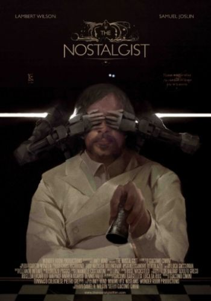
The Nostalgist is a 2014 science fiction short film, written and directed by Giacomo Cimini, based on the short story The Nostalgist by Daniel H. Wilson. It was produced by Giacomo Cimini, Tommaso Colognese and Pietro Greppi for Wonder Room Productions. It stars Lambert Wilson as the father and Samuel Joslin as the son. The short film was filmed in London and explores the themes of loss, nostalgia and robotics. It is noted for its performances and visual effects.
The short film was partially financed through a Kickstarter campaign.
The short film premièred Jun 19, 2014 at the Palm Springs International Festival of Short Films and went on to participate in the Fantastic Fest 2014, the Clermont-Ferrand International Short Film Festival 2015 and the Cleveland Film Festival 2014. It later had a limited release in the United States and Russia. It also premièred as video on demand on the We Are Colony on-line platform in October 2014.
The short film was included in the short film programme Cult of the BFI London Film Festival 2014. In 2014 it won the Méliès d’Argent, the Audience Awards at Trieste Science+Fiction Festival and Utopiales, as well as Best Short Film at the Giffoni Film Festival 2014.
The short film was selected for the Short Takes section of the December 2014 issue of the American Cinematographer.
Awards:
• 2nd place Best Short Film over 15 minutes - Palm Springs International Festival of Short Films 2014.
• Best Short Film (Generator +18) - Giffoni Film Festival 2014.
• Prix du Publique - Utopiales, Festival International de Science Fiction 2014.
• Méliès d’Argent and Audience Award - Trieste Science + Fiction Festival.
• Best Sci-Fi Short film - 28th Leeds International Film Festival.
• Best Professional Short Film over 10 minutes - Raw Science Film Festival.
Movie: Project Arbiter
Storyline: A soldier with a mechanical suit must defeat Nazis before they spread a virus.
Genres: Short, Action, Sci-Fi
Actor: Alexis Cassar, Jake Lyall, Tim Coyne
Director: Michael Chance
Duration: 22 min
Release: 4 February 2014
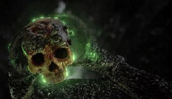
Rakka is a 2017 American-Canadian military science fiction short film by Oats Studios directed by Neill Blomkamp.
The film was released on YouTube and Steam on 14 June 2017.
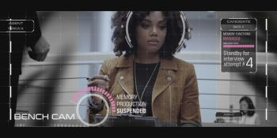
Movie: Real Artists
Storyline: In the near future, a young animator is offered what should be her dream job, but, when she discovers the truth of the modern 'creative' process, she must make a hard choice about her passion for film.
Genres: Short, Drama, Sci-Fi
Actor: Tamlyn Tomita, Tiffany Hines, Connie Jo Sechrist
Director: Cameo Wood
Duration: 12 min
Release: 13 February 2018 (USA)
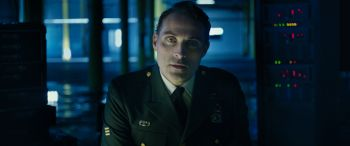
Movie: Rise
Storyline: A dystopian future, where man's attempt to create artificial intelligence has spun wildly out of control, leading to a war between man and machine.
Genres: Short, Fantasy, Mystery
Actor: Rufus Sewell, Kerry Bishé, Anton Yelchin
Director: David Karlak
Duration: 5 min
Release: 23 March 2016 (USA)
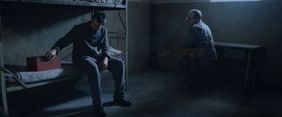
Room 8 is a 2013 short film written and directed by James W. Griffiths. On February 2014, this film has won the 67th British Academy Film Awards (BAFTA) as the best short film.
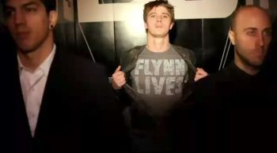
Movie: Tron: The Next Day
Storyline: Tron: The Next Day is a 10-minute short film, released on the Blu-ray edition of Tron: Legacy in April 2011, that fills in the backstory between Tron and Tron: Legacy. It features scenes from the real-world Flynn Lives ARG as well as purely in-universe content. The short film also reveals the full chronology of the Flynn Lives Organization, naming Roy Kleinberg as the secret figure heading up the operation and Alan Bradley as its financial backer. Some scenes in the short also set up the story for a potential third film.
Genres: Short, Sci-Fi, Thriller
Actor: Bruce Boxleitner, Jeff Bridges, Paul Dzenkiw
Director: Kurt Mattila
Duration: 10 min
Release: 14 March 2011
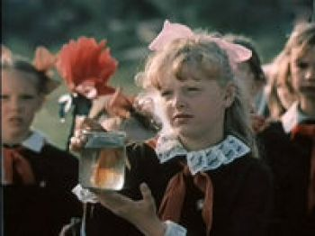
«Золотые Рыбки» — короткометражный фантастический фильм 1981 года. Выпущен в составе пятого выпуска киноальманаха «Молодость». Фильм снят по рассказу Кира Булычева «Поступили в продажу золотые рыбки» цикла «Великий Гусляр». В фильме в роли Великого Гусляра выступил город Калуга.
Всего Александр Майоров снял два фильма по Гуслярским рассказам — «Золотые рыбки» и «Шанс», оба в Калуге. Кир Булычёв считал фильм лучшей экранизацией своих произведений.
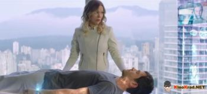
События короткометражного научно-фантастического фильма пронизаны желанием создателей показать зрителю обстановку, царящую в обществе будущего, в котором уровень преступности уже близок к нулю. Долгое время человечество размышляло о том, как избавиться от бандитов и ограничить общество от разных форм морального уродства. Учёные из будущего – сюжет развивается в начале следующего века – не просто находят такой способ, но и вынуждают совершивших злодеяния людей работать на благо общества, для которого они опасны. Это становится возможным благодаря уникальной системе виртуальной реальности под названием «АТМА». Теперь все преступники проходят виртуальное лечение и избавляются от психических отклонений и пагубных привычек, нарушающих законодательство. Каковы будут последствия подобного варианта развития событий? Не приведёт ли это к очередной глобальной проблеме?
• Название: Погружение.
• Оригинальное название: Immersion.
• Год: 2015.
• Страна: Канада, США.
• Продолжительность: 9 мин.
• Режиссёр: Рафаэль Роджерс.
• Премьера РФ: 2014.
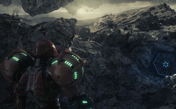
Movie: Metroid: The Sky Calls
Storyline: Samus Aran, intergalactic bounty hunter, investigates a strange alien signal coming from an uninhabited planet, in hopes of discovering the fate of those who raised her.
Actor: Jessica Chobot, America Young
Director: Sam Balcomb
Duration: 11 min
Release: 2 November 2015 (USA)
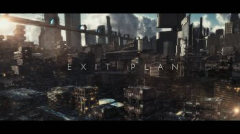
Movie: Exit Plan
Storyline: Our world is coming to an end! We must prepare! After an asteroid collides with the moon and sends it on a decaying orbit towards the earth, Mankind is left with only one choice. Escape! Adam and his robotic companion IO must do what they can to get off the planet before it's too late.
Actor: Adam Leader, Nick Oakes, Rachel Oakes
Director: Richard Oakes
Country: UK
Duration:
Release: 1 January 2016 (UK)
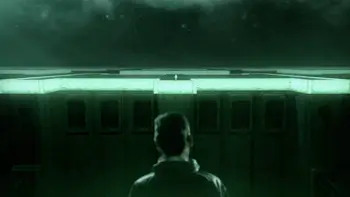
Mouse-X is a mystery/sci-fi story about Anderson, a man who wakes in a building with no idea where he is or how he got there, before slowly discovering that in each of the rooms around him are a thousand clones of himself, all of whom woke into the same mysterious scenario.
To escape he needs to outwit his ‘selves’ whilst overcoming the realisation that he is not the only Anderson…